颗粒状设定下的空间经济学
2024-02-05
I had the honor of co-presenting this paper at the China Economic Transition Workshop with Yunqian Cheng on May 14, 2024.
Paper: Dingel, Jonathan I., and Felix Tintelnot, "Spatial Economics for Granular Settings," Working Paper Series, Working Paper, 2020 (National Bureau of Economic Research).
1. 问题何在？
随着空间数据精细程度的提高与计算机算力的增强，空间经济学研究逐渐将空间尺度非常精细(小)的数据引入量化空间模型中，我们将这种结构称为“颗粒状的设定(granular settings)”，因为地区的单位变得非常小、数量变得非常多。传统的量化空间模型通常用于研究国家间的贸易与人口流动(Caliendo and Parro, 2015, RES; Caliendo et al., 2021, JPE)，而如今，类似的模型也可以用于分析一国内部的区域间关系(Donaldson, 2018, AER; Tombe and Zhu, 2019, AER)，甚至分析一个城市的内部结构(Ahlfeldt et al., 2015, ECTA)。
尽管各式各样的量化空间模型基于不同的假设、引入了不同的设定，但均衡条件下，不同模型所刻画的区域间贸易或人口流动的结构基本上都与引力方程类似(Arkolakis et al., 2012, AER)。关于引力方程，一个简单的版本如下： $$X_{od} = \alpha \frac{Y_o \times Y_d}{D_{od}}$$ 其中，$X_{od}$代表从地区$o$向地区$d$的贸易或人口流动，$Y_o$与$Y_d$分别代表两地规模(size)，而$D_{od}$则代表两地距离，体现贸易成本或流动成本。更常见的一般化的版本如下： $$X_{od} = K_{od} \gamma_o \delta_d$$ $K_{od}$代表地区$o$与地区$d$在贸易或人口流动上的双边阻力(bilateral resistance)，既包含自然地理因素造成的阻碍，也包含制度性因素造成的阻碍，还包括一些不可观测因素造成的阻碍。$\gamma_o$和$\delta_d$分别代表地区$o$与地区$d$某些地区层面上的特征(与双边贸易相联系的一般是双方的规模，与人口流动相联系的一般是双方的工资总额、便利设施(amenities)等等)。总之，引力模型认为，两个地区的贸易与人口流动规模主要取决于一些地区层面的变量，以及双边的阻碍。
作为一个经验法则，引力方程的成立需要地区$o$与地区$d$之间的贸易或人口流动的规模足够大，只有这样，个体层面的特异性偏好(idiosyncratic preference)才显得不太重要，大样本的力量会使得地区的特征$\gamma_o$和$\delta_d$成为两地贸易或人口流动的决定性因素。回忆一下当今量化空间模型的奠基性模型——EK模型(Eaton and Kortum, 2002)，这是一个异质性企业模型，一个地区的企业具有不同的生产率水平(通过各地不同的生产率分布来刻画)，但是当企业的数量足够多、贸易量足够大的时候，单一企业对区域间贸易的影响就消失了，真正决定区域间贸易量的是两地的平均生产率和生产率分布的离散程度。
于是问题来了，如今量化空间模型被用来研究空间尺度很小的问题，此时量化空间模型对大样本理论的使用条件可能根本无法满足。举个例子，如果用全国抽样数据研究某城市内不同街道之间的人口分布与流动结构，那么观测到的人口流动矩阵(矩阵中每个元素反映了从某一街道向另一街道的流动人口数量，即$X_{od}$)的很多元素都会特别小，甚至有很多0。这往往不是大样本规律作用后的结果，而主要是由个体层面的特异性偏好驱动的。
比如说，量化空间模型在进行校准和反事实分析的时候，一种常用的思路就是，我们可以借助观测数据来反推地区层面无法观测的变量(如双边阻力$K_{od}$或各地区的便利设施水平)：如果某地的人口流入规模极大，那么说明该地区流入成本低、便利设施水平高等等(e.g., Tombe and Zhu (2019)估计我国省份间、城乡部门间贸易与流动成本，Caliendo et al. (2021)估计欧盟扩容后欧盟新旧成员国之间流动成本的变化)。但是，同样的逻辑用在小尺度的观测数据上，$X_{od}$为0就代表了地区$d$的便利设施极差或者人口流入成本奇高无比，这显然将很多个体层面的随机因素统统归因到地区层面的特征上了，校准的结果自然很难称得上理想。
因此，需要提出一个颗粒设定下的有限个体量化空间模型！在这一模型中，作者保留了个体的异质性，而没有借助大样本理论将其消去。在经典方法中，由于大样本理论的存在，变量的反事实预测是一个确定的数；但在有限个体模型中，个体的异质性(一个随机扰动)没有消去，因此变量的反事实变化是一个随机变量，具有一个分布。作者生成了具有个体异质性的有限样本来模拟现实情形，从而可以考察颗粒状设定会给传统空间模型的预测带来多大的不确定性。这样类比一下可能有助于大家理解：本文指出，传统的空间模型在反事实分析时相当于只估计了点估计值，没有考虑标准误，自然也没有统计推断；如果个体数量很多，那不检验其实问题不大；但是在颗粒状设定下，样本数量相对于地区数量并不能算多，不检验的话问题就会很大了，以往研究估计出来不等于0的反事实变化，可能在考虑个体异质性导致的不确定性后，在统计意义上其实是无异于0的。
2. 经典的量化空间框架
2.1. 基础设定
作者先构建了一个经典的模型框架(文中常称之为“连续模型”)，这个框架是Ahlfeldt et al. (2015, ECTA)研究柏林墙倒塌产生的经济影响的模型的简化版本，主要是简化了对土地要素的设定：
- 静态模型(只有一期)，完全竞争。
- 研究对象是一个封闭经济体，共有$L$单位劳动力(居民)和有限个地区(用下标$k$和$n$表示)。
- 每个地区有固定数量的土地$T_k$，不可交易，居民需要消费土地作为住房支出，土地收入归地主所有，随后地主的收入转化为商品消费。
- 每个地区生产一种特有的商品，该商品在地区间无成本地贸易。这是Armington模型的经典设定，见Armington (1969, IMF Staff Papers)，在这一设定下，地区间贸易并非是由比较优势驱动的，而是由于各地生产的商品不同，而消费者是喜欢多样化的(love of variety)，因此会从各地购买商品。
- 劳动力选择居住地与工作地，居住地与工作地可以不同，但此时需要承担一个通勤成本$\delta_{kn}$，由两部分组成：通勤时间对工资的减少(因为减少了工作时间)以及通勤带来的其余不可观测的负效用，即$\delta_{kn} \equiv \bar{\delta}_{kn} \times \lambda_{kn}$。
- 工人的效用函数由两部分组成——个人消费指数$C$以及个体的特异性偏好$\nu$，前者权重为$\epsilon$，比如说，选择在地区$k$居住、在地区$n$工作的工人$i$的效用函数为：$$u_{kn}^i = \epsilon\ln C_{kn}^i + \nu_{kn}^i$$特异性偏好$\nu_{kn}^i$是一个随机变量，i.i.d地服从于一个Gumbel分布：$F(v_{kn}^i) = e^{-e^{-\nu_{kn}^i}}$。消费指数$C_{kn}^i$取Cobb-Douglas函数的形式：$$\begin{aligned} &C_{kn}^i = \frac{1}{\lambda_{kn}} \left(\frac{c_{kn}^i}{1-\alpha}\right)^{1-\alpha} \left(\frac{T_{kn}^i}{\alpha}\right)^\alpha \\ &\text{s.t. } PC_{kn}^i + r_k T_{kn}^i = w_k/\bar{\delta}_{kn} \end{aligned}$$其中，$c_{kn}^i$是各地生产商品的CES加总(商品间替代弹性为$\sigma>1$)，$T_{kn}^i$是对住房(土地)的消费，两者价格分别为$P$和$r_k$，由于不存在贸易成本，各地价格指数一致，而地价各异；$w_k$是工人在地区$k$工作的工资收入。
- 通过最大化上述效用函数，可得居民的间接效用函数为：$$U_{kn}^i = \epsilon\ln\left(\frac{w_n}{r_k^\alpha P^{1-\alpha}\delta_{kn}}\right) + \nu_{kn}^i \tag{1}$$
- 各地的生产函数仅含劳动要素：$q_n = A_nL_n$，因此单位产出成本为$w_n/A_n$，在完全竞争下，该成本也是商品价格。由于消费者的消费指数是各地商品的CES加总，因此易得价格指数为：$$P=\left[\sum_n\left(\frac{w_n}{A_n}\right)^{1-\sigma}\right]^{1/(1-\sigma)}$$
2.2. 空间均衡
工人选择居住地与工作地以最大化自身效用，由于效用函数中存在随机项，因此其决策表现为一个概率分布，其中，选择在地区$k$居住、在地区$n$工作的概率为： $$m_{kn} = \Pr\left\{\epsilon\ln\left(\frac{w_n}{r_k^\alpha P^{1-\alpha}\delta_{kn}}\right) + \nu_{kn}^i \geq \max_{k',n'}\left\{ \epsilon\ln\left(\frac{w_{n'}}{r_{k'}^\alpha P^{1-\alpha}\delta_{k'n'}}\right) + \nu_{k'n'}^i \right\}\right\}$$ 代入Gumbel分布的分布函数，可以得出$m_{kn}$的表达式。当工人数量足够大的时候，在地区$k$居住、在地区$n$工作的工人比例将收敛于上述概率，即： $$\frac{l_{kn}}{L} = \frac{w_n^\epsilon\left(r_k^\alpha \delta_{kn}\right)^{-\epsilon}}{\sum_{k',n'}w_{n'}^\epsilon\left(r_{k'}^\alpha \delta_{k'n'}\right)^{-\epsilon}} \tag{2}$$ 式(2)提供了量化空间均衡中一种常见的校准方法：通常情况下，地区$k$与地区$n$的之间的通勤成本$\delta_{kn}$(更一般地说，就是指双边阻碍)是不得而知的(除非我们将其建模为其他变量的函数)，但观测数据提供了人口流动结构$l_{kn}$、各地的工资水平$w_n$和土地价格水平$r_k$，只需校准出参数$\epsilon$，就可以反推各地区的通勤成本。
空间均衡还要求实现商品市场与土地市场的出清。商品市场出清要求各地的产出等于其需求，后者由消费指数中CES函数的性质可以得到。出清条件为： $$A_n\sum_k\frac{l_{kn}}{\bar{\delta}_{kn}} = \frac{(w_n/A_n)^\sigma}{P^{1-\sigma}}Y, \quad \forall n \tag{3}$$ 其中$Y$是整个经济体的工资收入，即$Y\equiv \sum_{k,n}y_{kn} \equiv \sum_{k,n} w_n l_{kn} / \bar{\delta}_{kn}$。需要说明的是，虽然工人并不是将所有工资收入用于购买消费品，但是其住房支出将转化为地主的收入，地主的收入用于购买消费品，因此从商品市场出清的角度来看，这一过程等价于工人将所有收入用于购买消费品。类似地，土地市场出清要求土地的供给等于其需求，即： $$T_k = \frac{\alpha}{r_k}\sum_n \frac{w_n l_{kn}}{\bar{\delta}_{kn}}, \quad \forall k \tag{4}$$
可以证明，当参数满足一定条件时，量化空间模型存在唯一的均衡，该均衡表现为一组工资水平、土地价格水平与人口分布的取值$\{w_n, r_k, l_{kn}\}_{k,n}$，使得均衡条件式(2)至式(4)成立。
2.3. 反事实分析
在量化空间模型中，一种常见的反事实分析方法是“精确帽代数(Exact Hat Algebra, EHA)”。直觉上，若要模拟某一政策的经济影响，我们首先需要求解政策发生前的均衡(基准均衡)，再求解政策发生后的均衡(反事实均衡)，随后比较反事实均衡与基准均衡，从而得出政策的影响。EHA的思路在于，我们关注的其实是政策导致的变化量，而不是政策前后的绝对量，因此可以将变量在反事实均衡($x'$)与基准均衡($x$)的相对变化$\hat{x}\equiv x'/ x$作为估计的主要目标。在相除过程中，很多变量或参数得以消去，因此能减少估计的难度(Dekle et al., 2007, AER)。
为此，需要将前文中所有变量的关系写成相对变化的形式，并求得相对形式下的均衡。在相对形式下，均衡表现为一组工资水平、土地价格水平与人口结构的相对取值$\{\hat{w}_n, \hat{r}_k, \hat{l}_{kn}\}_{k,n}$，使得相对形式下的均衡条件成立，如下面的式(5)至式(7)。 $$\hat{w}_n=\hat{A}_n\left(\sum_k\hat{y}_{kn}\frac{y_{kn}}{\sum_{k'}y_{k'n}}\right)^{\frac1{1-\sigma}}\hat{P}\hat{Y}^{\frac1{\sigma-1}} \tag{5}$$ $$\hat{r}_k=\hat{T}_k^{-1}\sum_n\hat{y}_{kn}\frac{y_{kn}}{\sum_{n'}y_{kn'}} \tag{6}$$ $$\hat{l}_{kn}=\frac{\hat{w}_n^{\epsilon}\left(\hat{r}_k^{\alpha}\hat{\bar{\delta}}_{kn}\hat{\lambda}_{kn}\right)^{-\epsilon}}{\sum_{k',n'}\hat{w}_{n'}^{\epsilon}\left(\hat{r}_{k'}^{\alpha}\hat{\bar{\delta}}_{k'n'}\hat{\lambda}_{k'n'}\right)^{-\epsilon}\frac{l_{k'n'}}L} \quad \text{ if } l_{kn}>0 \tag{7}$$ 此处省略了其余内生变量的相对取值的表达式，请参见Appendix C.2，由于该方法在量化空间模型的研究中已相当成熟，此处不再赘述。
式(6)和式(7)表明，为了求得反事实均衡下的相对变化，需要首先求出各居住地、工作地在基准均衡下的人口份额$l_{k'n'}/L$以及收入份额$y_{kn} / \sum_{n'}y_{kn'}$。我们先看人口份额，实际上，式(2)已经给出了基准均衡下的人口份额的表达式。然而，当我们检查手中的现实观测数据时，就会发现观测数据是不可能与式(2)的预测完全一致的。这意味着，在进行反事实分析之前，我们首先需要校准基准均衡，使其与模型一致。在式(2)中，各地的工资水平$w_n$和土地价格水平$r_k$是区块层面的变量，而不是区块对层面strong>的变量，这意味着我们可以用居住地和工作地的固定效应将其估计出来。此时仅剩人口份额$l_{k'n'}/L$和通勤成本$\delta_{kn}$这两个区块对层面的变量是待定的，这就引出了两种不同的校准思路：
- 我们将通勤成本$\delta$建模出来(例如将其设定为两地通勤时间$\tau_{kn}$的函数$\delta_{kn} = e^{\kappa\tau_{kn}}$，见Ahlfeldt et al. (2015, ECTA))，这样一来就可以量化通勤成本，从而在式(2)中计算出所有地区的人口份额。显然，计算出的人口份额和观测的人口份额往往是不一致的，但我们将计算的人口份额视为基准均衡的取值，代入后续的反事实估计中。这一思路可以称作“协变量方法(covariates-based approach)”，其优点在于对数据的需求少(无需知道现实中的人口份额)，但其潜在问题在于，对通勤成本进行建模必定会遗漏很多(不可观测的)因素。
- 我们直接假设观测到的人口份额就是基准均衡，此时将观测数据代入式(2)，可以反推出通勤成本，同时，在后续反事实估计中，直接代入观测到的人口份额即可。这一做法在当前的量化空间模型研究中非常普遍，通常被称为“精确帽代数(Exact Hat Algebra, EHA)”或者“份额校准方法(calibrated-shares procedure)”，但正如前面所说，当遇到空间尺度很小的数据结构时，观测到的人口份额很可能与模型借助大样本理论推出的人口份额差异巨大。
3. 颗粒状设定下的反事实分析
3.1. 一个颗粒状设定的具体例子
我们首先来看一个符合颗粒状设定的现实情境——纽约市区块与区块(tract-to-tract)之间的通勤人口。“区块”是指美国人口普查局(U.S. Census Bureau)定义的一个小区域，通常是一个相对连续的地理区域，用于收集和分析人口统计数据，以便更好地了解和管理城市的人口特征和社会经济状况。每个区块通常包含大约1,200到8,000人口。由于区块是一个空间尺度很小的单位，光是纽约一座城市就有大约460万个“区块对”(即将区块两两配对，一个区块作为居住地$k$，另一区块作为工作地$n$)，相比之下，纽约只有250万的通勤人口，因此85%的区块对是没有人口的，在剩下的15%的区块对中，超过一半的区块对只有1个人。这并不是危言耸听，实际上近年来有一些研究与这一设定类似：
- 柏林：300万通勤人口、2.54亿个街区对(Ahlfeldt et al., 2015, ECTA)；
- 底特律城市地区：130万通勤人口、130万个区块对(Owens et al., 2020, AEJ: EP)；
- 洛杉矶都会区：670万通勤人口、600万个区块对(Severen, 2021, REStat)
- ……
我们可以看到颗粒状设定下区块对的通勤人口数量是不稳定的，尤其是对于人口数量很少的区块对来说。如下图所示，那些在2013年有1个通勤人口的区块对，在2014年有65%变成了0，只有20%仍保持1人；在2013年有2个通勤人口的区块对，也只有15%在2014年仍保持2人。这说明，对于通勤人口数量很少的区块，主要的影响因素可能是一些随机因素。
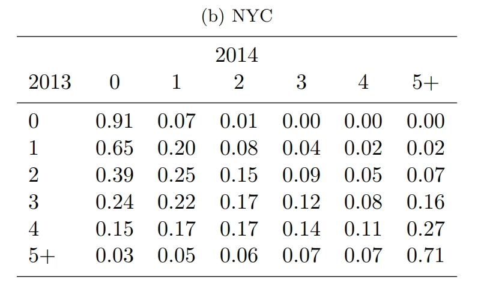
Btw，显然，扩大空间尺度能够减少“地区对”的数量，比如考察县与县之间的人口流动、甚至州与州(省与省)之间的人口流动，但如果数据来源是小样本的抽样数据，那么即使在大的空间尺度上，也会遇到与上述类似的问题。
3.2. 校准
现在，我们使用前面提到的两种思路来校准基准均衡。方便起见，作者先参照现有文献设定了$\alpha=0.24$。正如前文所说，在式(2)中，通勤成本$\delta_{kn}$和人口份额$l_{kn}/L$是需要校准的，但两者知其一即可，前面提到的两种思路(covariates-based approach和EHA)的差别就在于处理哪一个变量上。在模型中，我们将通勤成本分解为两部分$\delta_{kn}\equiv\bar{\delta}_{kn}\times \lambda_{kn}$，$\bar{\delta}_{kn}$是两地的通勤时间，$\lambda_{kn}$是通勤产生的其余不可观测的负效用。作者首先借助Google Maps计算了任意两个区块来回的通勤时间$t_{kn}$和$t_{nk}$，从而计算出$\bar{\delta}_{kn} = H/(H-t_{kn}-t_{nk})$，其中$H$代表工人一天的工作时间，取$H=9$。含义就是，通勤减少了工人本可以用于工作赚钱的时间。 $$\frac{l_{kn}}{L} = \frac{w_n^\epsilon\left(r_k^\alpha \delta_{kn}\right)^{-\epsilon}}{\sum_{k',n'}w_{n'}^\epsilon\left(r_{k'}^\alpha \delta_{k'n'}\right)^{-\epsilon}} \tag{2}$$
无论使用哪一种思路，式(2)中的参数$\epsilon$都是需要校准的，所以下面我们先估计这个参数。如果使用covariates-based approach，那么我们认为通勤成本是可以被准确建模出来的，换句话说，我们认为不存在不可观测的部分(于是$\lambda_{kn}=1, \forall k,n$)，此时$\delta_{kn}=\bar{\delta}_{kn}$已经求得了。接下来，方法一，可以用极大似然估计来估计参数$\epsilon$，对数似然函数为： $$\mathcal{L}\equiv\sum_{k,n} l_{kn}\ln\left[\Pr\left\{U_{kn}^i>U_{k'n'}^i,\forall k'n'\neq kn\right\}\right] = \sum_{k,n} l_{kn} \ln\left[ \frac{w_n^\epsilon\left(r_k^\alpha\bar{\delta}_{kn}\right)^{-\epsilon}}{\sum_{k',n'}w_{n'}^\epsilon\left(r_{k'}^\alpha\bar{\delta}_{k'n'}\right)^{-\epsilon}}\right] \tag{8}$$ 可以证明，此处的极大似然估计量等价于泊松伪极大似然(Poisson pseudo maximum likelihood, PPML)估计量，因此用后者计算即可。方法二，可以先对式(2)取对数，然后用OLS估计，但此时会损失掉大量$l_{kn}/L=0$的样本。两种方法中，$w_n$和$r_k$使用居住地与工作地的固定效应进行估计。估计结果如Table 1所示，后续估计中以Column 1的估计结果为主。在校准出参数$\epsilon$以及$\{w_n, r_k\}_{k,n}$之后，代入式(2)即可计算出各地的人口份额，同时，代入市场出清条件式(3)和式(4)，可以计算各地的收入份额，以及$\{A_n\}$和$\{T_k\}$。此时，基准均衡的校准完成，计算得出的人口份额与收入份额将用于后续的反事实估计中。
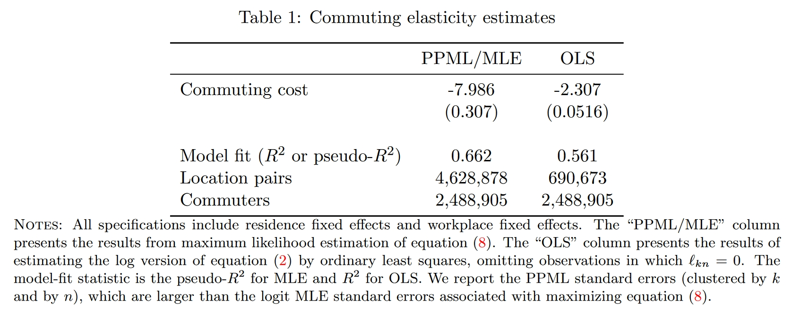
如果使用EHA，那么式(8)中还存在一项不可观测的通勤成本$\lambda_{kn}^{-\epsilon}$，于是我们还需要作出额外的假设，比如假设其条件期望为1(即$\mathbb{E}[\lambda_{kn}^{-\epsilon}|r_k,w_n,\bar{\delta}_{kn}]=1$)，这样一来，估计的似然函数与式(8)是一样的。因此，在参数$\epsilon$的校准上，两种方法在操作上其实没有区别。不过，如果使用EHA方法，则直接使用观测的人口份额与收入份额进行后续的反事实估计即可。
3.3. 蒙特卡洛模拟：EHA方法在颗粒状设定下会表现地多糟糕？
为了检验covariates-based approach和EHA两种方法在颗粒状设定下的表现，我们人为模拟一个人口分布的数据生成过程，但限制在较小的样本量中(样本量$I$大约为250万，对应纽约的通勤人口总数)。模拟中采用的数据生成过程直接使用了2.2中用covariates-based approach方法校准得出的数据生成过程：在式(2)中，我们已经得到或校准出了$\{w_n, r_k, \delta_{kn}\}_{k,n}$和$\{\alpha, \epsilon\}$，于是可以计算出各地式(2)等号右边的取值。回忆一下，在模型中，等号右边的值代表个体选择在地区$k$居住、在地区$n$工作的概率，假设个体是i.i.d.的，那么这些概率将使得最终的人口分布确定为一个多项式分布，于是可以根据这个多项式分布生成模拟的人口分布，每一次模拟的人口分布就是这个多项式分布的一个实现值。我们假设研究者可以观测到人口分布与各地的工资水平$\{w_n,l_{kn}\}_{k,n}$。
我们关注两种方法对一项外生冲击的经济后果的预测效果：假定某个区块(包含200 Fifth Avenue的那个区块，后文称为“处理组区块”)的生产率外生地提高了9%(写作相对变化就是$\hat{A}_n=1.09$)，而其余区块的生产率保持不变($\hat{A}_n=1$)，此外，所有区块的土地面积、通勤成本均保持不变($\hat{T}_k=1, \hat{\bar{\delta}}_{kn}=1, \forall k,n$)。我们将生产率的外生变化代入式(5)至式(7)，就可以求解出这一外生冲击对人口分布产生的真实影响，得到各区块对的人口数量在反事实均衡下的相对变化$\{\hat{l}_{kn}\}_{k,n}$。接下来，作者生成了100次模拟，每次模拟过程如下：
- 生成基准情形下多项式分布的一个实现值，从而得到基准情形的一个模拟人口分布。
- 这一步的思路与2.2节是一样的，即分别使用两种方法来校准基准均衡。根据covariates-based approach的思路，我们先用PPML校准出参数$\epsilon$的取值以及各地区作为居住地和工作地的固定效应(从而得到$\{w_n, r_k\}_{k,n}$)，然后利用式(2)计算出基准均衡下的$\{l_{kn}\}_{k,n}$，然后利用市场出清条件式(3)和式(4)计算出$\{y_{kn}\}_{k,n}$。根据EHA的思路，校准参数$\epsilon$的做法一样的，然后我们直接根据观测数据得到$\{l_{k,n}\}_{k,n}$，再借助观测到的工资水平$\{w_n\}_n$计算出各区块对的工资总额$y_{kn}=l_{kn}w_n/\bar{\delta}_{kn}$。
- 由于基准情形的模拟分布与理论分布往往是不同的，为了增强真实值与预测值的可比性，需要对生产率外生冲击$\hat{A}_n$的取值进行微调，使得用covariates-based approach或EHA方法预测反事实变化时，处理组区块工人总数的变化与真实值一致(由于只是增加了一个总数的约束，因此微调后的$\hat{A}_n$不会有多个取值)。
- 完成对$\hat{A}_n$的微调之后，再分别使用covariates-based approach和EHA两种方法预测各区块对人口数量的变化$l_{kn}(A')-l_{kn}(A)$以及各区块地价的变化$\hat{r}_k/\hat{P}-1$。
- 将真实的变化回归到预测值上，讨论covariates-based approach和EHA两种方法在颗粒状设定下的预测准确性。
如果一种估计方法是没有偏误的，我们应当预期回归的斜率接近1(表明预测值和真实值非常接近)且截距接近0。Figure 2中的蓝色线代表covariates-based approach的预测结果，100次模拟得到的斜率的分布集中在1附近，截距的分布集中在0附近，表明covariates-based approach的预测非常准确，而且波动很小；红色线代表EHA方法，相比之下，EHA方法的预测就相当不尽人意了，其预测即不准确又具有较大波动。
EHA方法完美地匹配了基准情形下观测的人口份额，它不像covariates-based approach那样仅使用少量参数来模型化通勤成本，从而得到一个与观测数据不太一样的人口份额，我们可以将EHA视为一个极其灵活的参数化模型(EHA相当于为每个区块对的通勤成本都设定了一个待估参数，相当于计量中常说的“饱和模型”)，它非常准确地拟合了基准情形(“训练集”)，但在反事实预测(样本外预测)时就显得十分糟糕了，这就是机器学习中常说的“过拟合问题”。
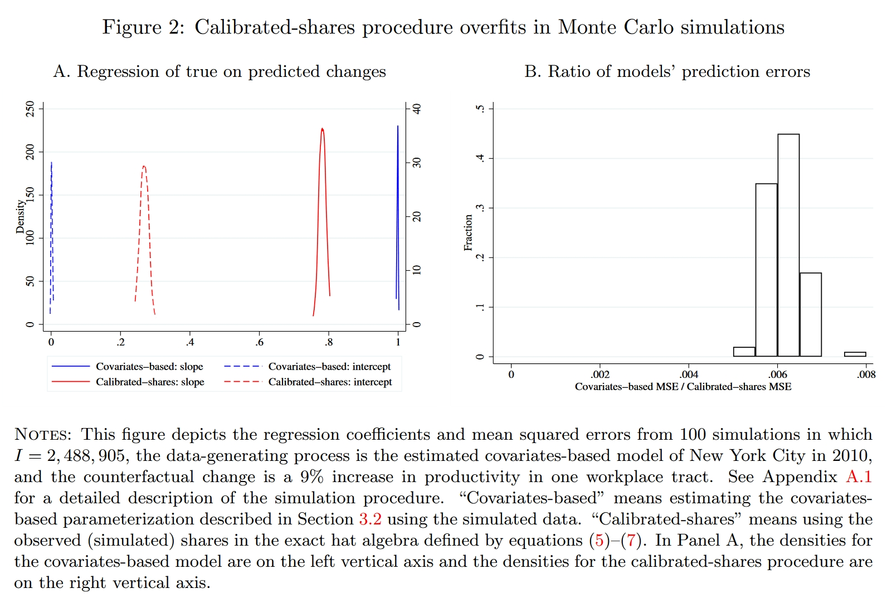
前面说了，颗粒状设定下EHA的问题在于，样本中包含的个体数量$I$与“地区对”的数量$N$差不多，甚至有时候$I < N$，导致人口矩阵中很多元素都非常小(人数很少)，因此一些随机的因素反而成为了决定人数的主因。由此可想，过度灵活的参数模型自然包含了太多混淆的信息。接下来我们进一步考察EHA方法的有限样本性质，看看随着样本数量的增大，如果$I\gg N$，EHA是否会表现的更好。Table 2展示了结果($I$取2.5代表2.5 million，以此类推)，可以看到当模拟样本的数量$I$增加到50以后(区块对数量的大约20倍)，EHA的预测效果就比较理想了。
我们简单说一下Panels A和B的区别。Panel A进行的就是前文说的对比——将理论计算出的人口分布的真实变化与EHA方法的预测进行对比，这里的真实变化相当于人口数量无穷大的时候的结果(所以文中叫做“continuum change”)，因此每次模拟中，预测值所对比的真实值是同一组数。Panel B不一样，计算出反事实均衡后，作者计算出反事实均衡下人口在理论上服从的多项式分布(该理论分布的人口数量与模拟样本的人口数量一样多，所以文中叫做“finite-sample change”)，并在每一次模拟时独立地从该分布中获取一个实现值，将其作为真实的反事实均衡，这样一来，每次模拟中预测值所对比的真实值就不是同一组数。显然，由于Panel B中外生冲击产生的真实影响也是一个随机变量，因此预测值和真实值的偏差就会更大。不过，$I$增大到$N$的大约20倍之后，EHA的预测也相当准确了。
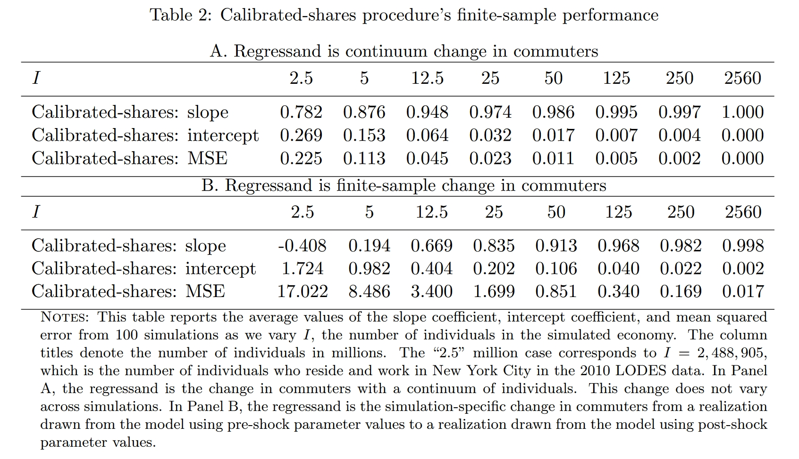
那么，是不是covariates-based approach就没有问题了呢？别忘了前面模拟中的基准情形就是根据covariates-based approach生成的，这样一来就假设了通勤成本是可以被准确地建模的，回避了covariates-based approach的不足之处。下面我们调整一下数据生成过程，纳入通勤导致的不可观测的负效用，即令$\lambda_{kn} \neq 1$： $$\begin{aligned} &\ln \delta_{kn} = \ln \bar{\delta}_{kn} + \ln \lambda_{kn} \\ &\ln\lambda_{kn} \stackrel{\text{i.i.d.}}{\sim} \mathcal{N} (0, \Lambda\times \text{Var}[\ln\bar{\delta}_{kn}]), \quad \Lambda\in\mathbb{R}^+ \end{aligned}$$ 其中$\Lambda$是一个调节不可观测因素的影响程度的参数。在新的数据生成过程下，我们重新比较一下covariates-based approach和EHA的预测效果，见Table A.2(笔记中仅截取了表格的头尾)。当$\Lambda$由0增大至1时(表明不可观测因素的方差与可观测因素相当，这是很极端的情形)，小样本下EHA方法的准确性得到了提高(但依然有点不准)，而covariates-based approach的预测从始至终是无偏的，但是波动程度(MSE)会增大。颗粒状设定的小样本下，covariates-based approach依然表现地更好；不过，当样本量超过一定规模后，EHA方法无论在准确性还是波动程度上都将占优。
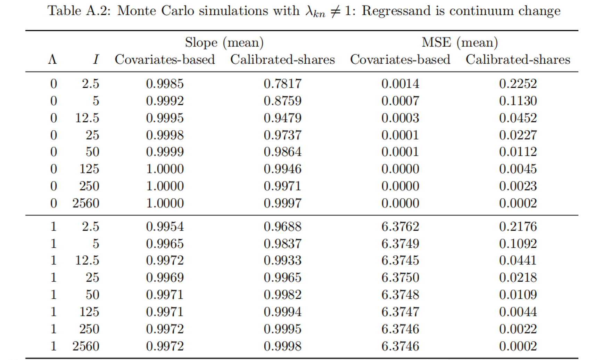
做一点小提醒，请时刻记得本文对比的是颗粒状设定下(很小的空间尺度下)两种方法的优劣，正如这里模拟的设定，在这样的情境下，假定不可观测成本($\lambda_{kn}$)的均值为0往往是合理的，因为造成通勤成本的主因就是地理距离，利用地理距离建模通勤成本之后，余下的因素($\lambda_{kn}$)可能就和0差不多了。但是，如果研究是在更大的地理尺度下(例如研究国家间、州(省)之间或城市间的人口流动)，那么阻碍人口流动的因素很可能除了地理距离以外还有重要的制度性因素(例如不同的文化、不同的法律制度)，在这样的情境下，如果使用covariates-based approach，可能会显著低估通勤(流动)成本，从而高估了基准均衡下的流动人口规模，这很可能会使后续的反事实估计有偏。
3.4. 事件研究
前面是使用模拟的手段进行研究，接下来，作者尝试使用现实的冲击进行事件研究。为此，作者挑选出了其中83个区块作为“处理组区块”，这些区块具有较大的雇员数量，并在2010至2012年雇员数量有较为明显的增长，作者认为，这些增长主要是由workplace-specific的shock导致的。我们将这些shock刻画为这些区块的生产率发生了增长。作者利用与上一小节一样的思路，根据观测数据反推出83个区块各自的生产率变化幅度，使其在反事实均衡中雇员总数的的变化与观测数据一致。由于求解的是一个包含83个元素的向量，求得的向量并不唯一，但大差不差。
3.4.1. 两种方法效果的比较
此处依然沿用上一节的做法，分别使用covariates-based approach和EHA两种方法预测各区块对(但仅限工作地为处理组区块的区块对)人数的相对变化，然后将观测值(真实值)回归到预测值上。每一个处理组区块都可以跑一个回归，然后将这83个回归系数画成分布图。由Figure 3的图A可见，covariates-based approach(蓝色线)得到的斜率分布在1附近，截距分布在0附近，表明其预测效果较为理想；相比之下，EHA方法(红色线)的偏误很大。
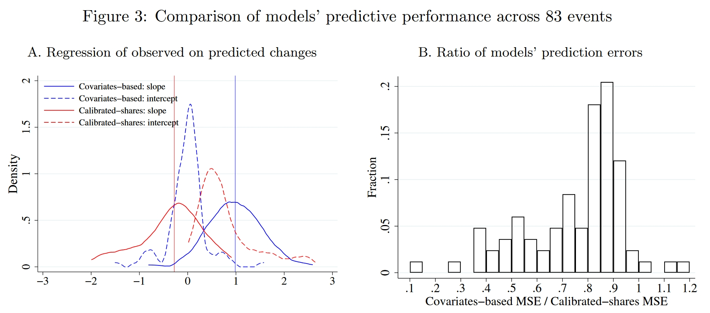
究竟是什么导致了两种方法的差异？我们前面一直强调，在颗粒状设定下观测到的人口矩阵很多元素都很小甚至为0，如果使用EHA这样过度灵活的估计，会导致其估计出的通勤成本矩阵$\{\delta_{kn}\}_{k,n}$包含太多混淆因素。比如说，对于那些人口数为0的区块对，EHA方法将得出其通勤成本$\delta_{kn}$无穷大，而在covariates-based approach下，通勤成本是根据通勤时间计算出的一个有限大的数。为了说明这些人数为0的区块对的影响，下面我们尝试调整一下covariates-based approach估计出的通勤成本矩阵，我们将那些人口数为0的区块对的通勤成本手动修改为一个近乎无穷大的数，其余区块对的通勤成本保留由通勤时间计算的结果。基于这一调整的通勤成本矩阵，我们再使用covariates-based approach预测各区块的反事实变化，并与EHA方法对比。
从Figure 3的图C中可以看出，当通勤成本矩阵调整后，covariates-based approach(蓝色线)的预测也变得不准确了，其斜率不再分布在1附近。 不过，尽管两种方法都是有偏的，但偏差的程度并不相同，covariates-based approach的波动程度(MSE，见图D)依然小于EHA。这说明，人数为0的区块对是导致偏误的重要原因，但不是唯一的原因。
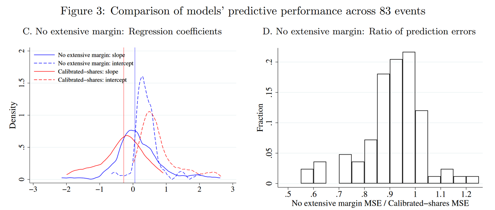
3.4.2. 将数据在时间或空间上加总有助于改善EHA的效果吗？
为了缓解样本量不足的问题，有的研究者会将外生冲击发生之前的相邻几期数据加总起来，这样一来，人口矩阵中人数等于0的元素就会少一些。当然，这本身就对数据提出了更高的要求。下面作者尝试考察这个这一操作能带来多大的改善。为了更好地校准基准均衡，部分研究者会选择使用冲击发生前的多期数据共同进行校准；另一种方法是在地理维度上加总，即将空间尺度小的划分加总到一个空间尺度划分更大的划分，例如可以将纽约2,160个区块加总到195个社区(Neighborhood Tabulation Areas, NTAs)。诚然，时间或空间上的加总对改善EHA的预测效果产生了些许积极影响，但总体上表现依然远远不如covariates-based approach(Figure B.2)。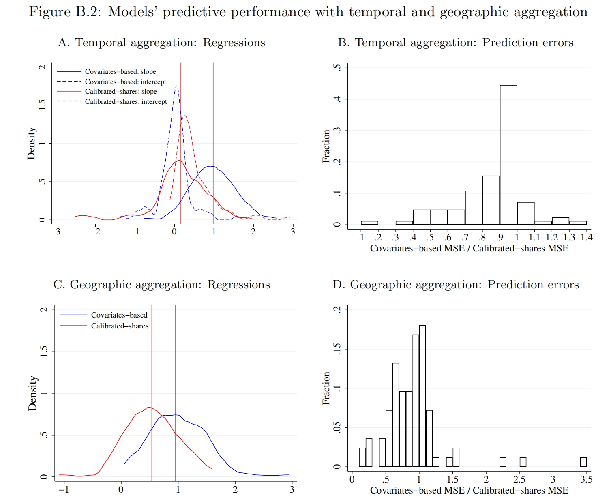
3.4.3. 使用一个近似的人口份额矩阵有助于改善EHA的效果吗？
(TBD.)
3.4.4. 交互固定效应
(TBD.)
3.5. 经典的量化空间框架在颗粒状设定下的效果：总结
在颗粒状设定下，我们发现covariates-based approach和EHA得到的结果是相差很大的，前者的预测结果往往是比较准确的，而后者的预测结果对于观测到的人口份额非常敏感，存在过拟合的问题。有一些方法能够帮助缓解EHA方法在颗粒装设定下的不足，合并数据通常帮助不大，但奇异值分解得到的近似矩阵能够很大程度上修正有偏误的估计结果。
EHA方法的预测效果取决于人数、“地区对”的数量等等，我们很难严格给“颗粒状设定”下一个准确的定义。不过借助蒙特卡洛模拟，我们发现当人数明显大于“地区对”的数量时(比如达到20倍或50倍以上)的时候，EHA方法就会表现地很好，而且预测的波动也较小。但是，带着这些结论重新审视现有研究，我们理应对EHA的估计结论保持一定的怀疑。
4. 有限个体数量下的空间模型
一个值得思考的角度在于，我们能不能将个体的idiosyncratic preference引入到空间模型中？此时得到的模型会有两个不同：第一，由于个体数量是有限的，于是均衡的价格并不一定能收敛到经典的连续模型下的均衡；第二，个体的idiosyncratic preference是一个随机变量，由于没有足够的个体数量使其在平均意义下几乎失效，因此我们关心的变量的反事实变化也会变成一个随机变量，具有一个可求的分布。
在连续模型中，工人先观察到各地价格(物价水平、工资等)，然后决定其居住与工作的地区，工人的决策又会影响到各地价格，进而继续影响决策……最终收敛至模型的均衡。这里的“先有鸡还是先有蛋”的问题并不重要，我们可以等价地看作，居民能够预期到各地均衡的价格，于是一次性完成了居住与工作决策。但是在有限个体的模型下，价格并不一定能收敛至均衡价格，于是“先有鸡还是先有蛋”的问题就变得重要起来了。因此，作者假设，居民在决策使对于各地的价格存在一个预期，这个预期等于各地在连续模型下的均衡，并基于此做出居住与通勤决策，作者称之为“连续情形下的理性预期(continuum-case rational expectations)”。
4.1. 设定
在有限个体的模型中，居民的效用函数、企业的生产技术以及通勤成本采用与连续模型相同的设定，基准均衡下的变量$\Upsilon \equiv \{L,\{A_n\},\{T_k\},\{\bar{\delta}_{kn}\}, \{\lambda_{kn}\}, \alpha, \epsilon, \sigma \}$也保持与连续模型一致。变化主要有两个：首先是一个有利于建模方便的假设，没有过多实质意义：假设经济中共有$I$单位工人，每个人可以提供$L/I$单位劳动投入，于是总的劳动投入量为$L$单位；其次是一个重要的时序假定(timing assumption)：假定工人首先进行居住地与工作地的决策，实现空间决策之后，各地市场出清再决定最终的价格(该价格可能与决策时预期到的不一样，但即使如此，工人也不再调整决策了)。
假设工人知晓基准变量$\Upsilon$并形成了对价格相同的“连续情形下的理性预期”，我们将预期的价格写作$\{\tilde{w}_n\}$和$\{\tilde{r}_k\}$，同时工人知道自己的特异性偏好$\{\nu_{kn}^i\}$。与连续模型一致，工人$i$选择在地区$k$居住、在地区$n$工作的间接效用函数为： $$\tilde{U}_{kn}^i = \epsilon\ln \left( \frac{\tilde{w}_n}{\tilde{P}^{1-\alpha}\tilde{r}_k^\alpha \delta_{kn}} \right) + \nu_{kn}^i \tag{9}$$ 唯一的差别就是所有的价格都变成了预期价格，其中$\tilde{P}=\left[\sum_n\left(\tilde{w}_n / A_n\right)^{1-\sigma}\right]^{1/(1-\sigma)}$。
由于个体存在特异性偏好，因此对于单个个体来说，即使价格给定，其选择前往任意地区居住或工作都是有可能的。这样一来，即使人数、地区数都很小，人口分布具有一个极其庞大的实现值取值集合(比如说，原文举了一个例子，假如只有10个人，4个地区(即16种居住与通勤选择)，仅考虑各地区对的人口数量，也具有3.27×106种可能性)，这会对可计算性构成挑战。
4.2. 均衡
由于模型假设了个体先根据预期价格做出居住与工作决策，再由市场出清决定价格，因此需要重新表述一下关于模型均衡的定义。在新的模型中，人口分布$\{l_{kn}\}$定义了有限个体下的通勤均衡(commuting equilibrium with finite many individuals)，给定$\{l_{kn}\}$之后，再由价格$\{w_n\}$和$\{r_k\}$定义贸易均衡(trade equilibrium)。新的定义如下：
- 工人根据效用最大化选择居住地与工作地： $$l_{kn}=\frac{L}{I}\sum_{i=1}^I\mathbf{1}\left\{\tilde{U}_{kn}+\nu_{kn}^i>\tilde{U}_{k'n'}+\nu_{k'n'}^i, \forall(k',n') \neq (k,n)\right\}$$
- 给定人口分布$\{l_{kn}\}$，工资向量$\{w_n\}$与土地价格向量$\{r_k\}$能够满足贸易均衡。
4.3. 校准基准变量
与经典的连续模型一样，有限个体的模型也需要校准基准均衡，包括弹性参数$\epsilon$。与得出式(8)的过程非常类似，我们仅需将式(8)的价格换成预期价格，得到下面式(10)这一对数似然函数： $$\mathcal{L}\equiv\sum_{k,n} l_{kn}\ln\left[\Pr\left\{\tilde{U}_{kn}^i>\tilde{U}_{k'n'}^i,\forall k'n'\neq kn\right\}\right] = \sum_{k,n} l_{kn} \ln\left[ \frac{\tilde{w}_n^\epsilon\left(\tilde{r}_k^\alpha\bar{\delta}_{kn}\right)^{-\epsilon}}{\sum_{k',n'}\tilde{w}_{n'}^\epsilon\left(\tilde{r}_{k'}^\alpha\bar{\delta}_{k'n'}\right)^{-\epsilon}}\right] \tag{10}$$ 我们并不需要提前将预期价格算出来，在进行极大似然估计(或PPML)的时候，预期价格$\{\tilde{w}_n\}$和$\{\tilde{r}_k\}$只需要用两组固定效应计算出来就可以了。随后，将各参数以及计算出来的预期价格代入市场出清条件式(3)和式(4)，就可以计算出基准情形下各地区(对)的$\{y_{kn}\}$、$\{T_k\}$和$\{A_n\}$。因此，在校准基准均衡的操作上，可以说，有限个体模型与covariates-based approach是完全一致的。
4.4. 工人事后会后悔吗？
有限个体模型建立在一个很重要的时序假设上：工人先按预期进行决策和行动，然后保持不动，最后再形成均衡价格。因此一个可以考察的问题是，工人在均衡价格形成之后会后悔吗？为此，作者构建了一个“后悔率(ex post regret)”指标$\chi_i$，并通过多次模拟来估计这个指标的大小。具体来说，假设均衡下价格为$\{w_n,r_k\}$，则一个选择在地区$k$居住、在地区$n$工作的工人$i$的后悔率$\chi_i$满足： $$\max_{k',n'}\left(\epsilon\ln\left( \frac{w_{n'}}{P^{1-\alpha}r_{k'}^\alpha\delta_{k'n'}} \right) + \nu_{k'n'}^i\right) = \epsilon\ln\left( \frac{(1+\chi_i)w_n}{P^{1-\alpha}r_k^\alpha\delta_{kn}} \right) + \nu_{kn}^i$$ 等式左边是工人在所有地区对的选择中能够得到的最大效用，右边如果抛开$(1+\chi_i)$一项的话，则代表居民在其选择的地区(即$k$和$n$)得到的效用。显然，如果其选择的地区就是使其在均衡价格下实现效用最大化的地区，那么$\chi_i$取0；如果不是，则$\chi_i$可以视为一个刻画两者偏离程度的指标。因此，考察$\chi_i$取0的比例以及$\chi_i$不取0时的分布，可以验证模型所基于的时序假设的可靠性。
作者生成了250万个工人(本质上是250万组$\{\{\nu_{kn}^i\}_{k,n}\}_i$)进行模拟，计算这250万个工人各自的后悔率$\chi_i$。上述模拟一共进行了10次，10次的模拟结果如Table E.1所示。在模拟中，$\chi_i>0$的比例大约为4.44%，在后悔的个体中，后悔率的中位数大约是0.72%，表明对于后悔的工人来说，其“真实选择”与“正确选择”的偏离大约为0.72%，并不算大。作者认为，考虑到有限个体模型对于反事实估计带来的好处，时序假设是完全可接受的。
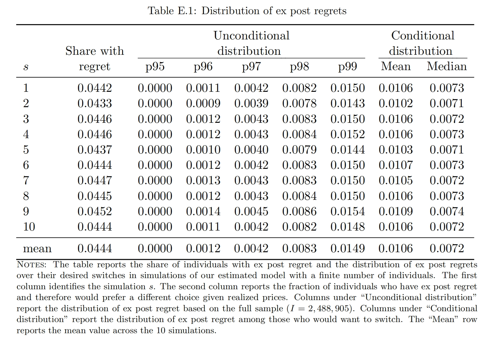
4.5. 有限个体的模型和传统的连续模型有何区别？
那么，关键问题来了，有限个体的模型究竟有何区别？为政策分析提供了什么改进呢？我们用传统的连续模型求解反事实均衡变化时，得到的是我们关心的变量的一个确定的变化。但是在有限个体模型中，个体特异性偏好的影响并没有被完全消除(wash out)，因此进行反事实分析时，我们关心的变量的变化应当是一个分布，这一分布的期望可能与在连续模型中的到的结果差不多，但关键在于，只要是分布，就会有波动，其波动程度反映了个体的特异性偏好所引起的预测结果的不确定性。当样本量很大的时候，预测结果的波动程度可能微乎其微，因此忽略掉也没关系。但在颗粒装设定下，个体相对于地区对而言并不算多，预测结果的波动程度会很大，此时相比起得到一个确定的变化，得到一个分布就会准确地多。也许可以用计量来类比，传统的方法相当于只估计出系数，而有限个体模型想要估计出系数及其标准误。
在操作上，有限个体模型使用与covariates-based approach相同的方式校准出基准均衡之后，并非直接代入外生变动，然后根据连续模型推导出的反事实变化均衡条件(即式(5)至式(7))求解一个确定的反事实预测，而是基于校准出来的基准均衡，生成一个与现实人数相同的有限个体样本，在有限样本中计算“有限个体下的通勤均衡”(这是一次模拟)。通过多次模拟(即反复生成样本)，就可以得到对关心的变量的反事实变动的一个预测分布，将这个分布的均值作为有限个体模型下的反事实预测。如果我们关心的是对人口分布的预测，可以证明有限模型下的预测分布的均值与连续模型的预测是相等的；价格则不然，由于求解出价格的“贸易均衡”本质上是在联立求解一系列代表市场出清条件的非线性方程，因此其期望值往往与连续模型的预测不同。
5. 应用
接下来，作者使用有限个体模型去考察一个现实案例：亚马逊在长岛市(Long Island City)建立第二总部(HQ2)的经济影响。简要说明一下背景，2017年，亚马逊宣布了建立HQ2的计划，他们将在美国寻找一个新的总部地点，以便扩大业务并提供更多就业机会，长岛市成为了亚马逊HQ2的候选地之一。2018年11月，亚马逊宣布在长岛市建立400万平凡英尺的办公区域、雇佣超过25,000位雇员。然而，在2019年2月，这个计划遭受了当地势力的剧烈反对而被迫流产。当地的政治家和社区居民一方面担心政府对亚马逊的补贴，另一方面担心亚马逊的计划会导致当地缙绅化(gentrification)。缙绅化指的是一个旧区从原本聚集低收入人士，到重建后地价及租金上升，引来较高收入人士迁入，并取代原有低收入者。这个过程可能因重建速度而需时多年，但结果是本区生活指数提高，原居住的低收入者最后可能反被新迁入的高收入者歧视，或引致原居住的低收入者不得不迁离往更偏远或条件更差的地区维持生活。
5.1. 亚马逊HQ2的冲击
与前文一致，作者将建立HQ2的外生冲击刻画为长岛市所在区块(“处理组区块”，记为$n^*$)生产率的外生增长，因此作者首先分别用covariates-based approach与EHA两种方法，反推出使得长岛市所在区块增加25,000个工人对应的生产率增长规模，分别记为$\hat{A}_{n^*}^\text{CBM}$和$\hat{A}_{n^*}^\text{CSP}$。Figure 6展示了纽约市在处理组区块工作的工人的居住地分布的影响，其中黑色的区块代表长岛市，颜色越红代表在住的工人越多。图A是2010年的观测数据(代表HQ2建立之前)，可见在处理组区块工作的工人大多居住在处理组区块的东边。图B和图C分别提供了covariates-based approach与EHA方法所预测的人口分布的反事实变化，可见两种方法预测的差异是很大的。根据covariates-based approach，若HQ2建立，在处理组区块工作的居民将集聚到该区块周围居住；而EHA方法的估计结果则表明，居住人口的增加地更多的地区(图C)基本上就是原来人口分布地多的地区(图A)，这其实是EHA方法的特点。在covariates-based approach下，处理组区块的居住人口大约增加2.5%，但在EHA方法下，处理组区块的居住人口将显著增加约102.2%。
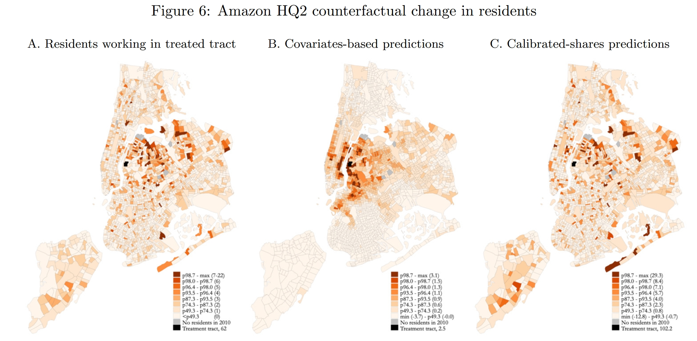
下面再看看见Figure 7中土地价格的反事实变化。在EHA方法下(图C)，实际租金的变化$\hat{r}_k/\hat{P}$非常明显，增长最大的区块大约增长10.4%；相比之下，covariates-based approach(图A和图B)预测的价格变化较小，增长最大的区块大约增长1.3%(图A)或1.2%(图B)，连续模型和有限个体模型的预测非常相似。整体上说，反事实预测反映的规律是，靠近处理组区块的区块会有更加明显的地租(房价)上涨；当然，在EHA方法中，房价变化的梯度特征没有那么明显。
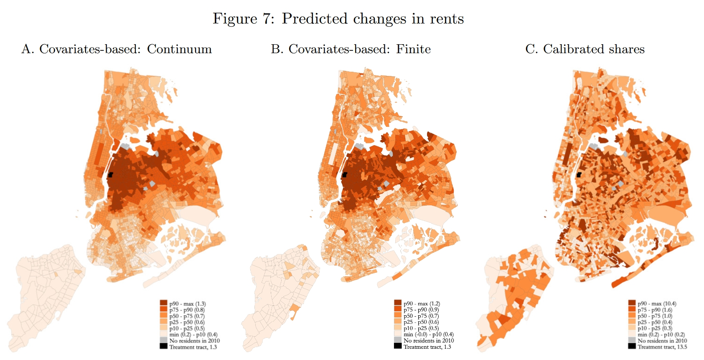
如果我们关心的是各地雇员数量、工资的变化(Figure F.2)的变化，那么连续模型中的两种方法与有限个体模型的方法的预测结果是非常类似的(虽然Figure F.2三张图貌似看起来差别很大，但主要是因为颜色是根据百分位标注的，如果关注图例中标注出的各百分位对应的变化大小，其实是差不多的)。这是因为此处所模拟反事实变动是一个使得处理组区块的雇员人数正好增加25,000的人的生产率冲击，因此其余区块的雇员总量的减少也是相同的；由于雇员总数是一个区块层面的变量，不像Figure 6考察的(在处理组区块工作的工人的)居住分布的变化是一个区块对strong>层面的变量，因此不同方法的预测比较相似。如果预测的是总体福利的变化，那么三种方法得出的结果也相差不大。
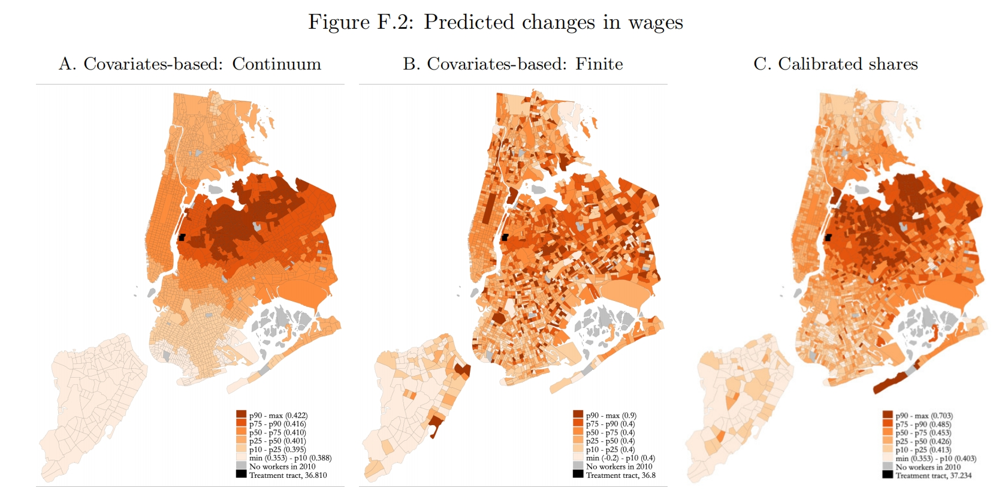
5.2. 特异性偏好导致的不确定性
在空间模型的反事实估计中，预测的不确定性可能有两个来源，其一来源于参数校准的不确定性(校准参数时得到的也是一个分布，只是我们通常只使用其点估计值)，其二是有限样本下个体特异性偏好带来的不确定性。作者构建了100个包含250万个个体的样本(即在校准出来的基准均衡的基础上进行100次模拟)，并分别计算其通勤均衡与贸易均衡，从而得到100个反事实预测，这100个预测就构成了一个预测分布。Figure 8分别考察了各区块的居民数量、工人数量、土地价格与工资的变化，图中模拟了两种变化的来源，蓝色和红色代表由个体特异性偏好导致的不确定性，蓝色代表各区块反事实变化分布的95%分位数，红色代表5%分位数(因此两者形成的区间就代表区块反事实变化的90%置信区间)；其余两个颜色点代表由参数校准带来的不确定性(还不太清楚作者是怎么模拟的，前面作者一直用2010年的现实数据来校准基准均衡，此处貌似尝试了用2008年的数据来校准，因此会得到一组新的参数，但这样貌似只能得到一个两点分布...)，其5%分位数与95%分位数是非常接近的，这表明反事实估计中不确定性主要来源于个体异质性，所以我们下面主要关心蓝色点和红色点。
图A是各区块居民数量的变化，可以看到，各区块90%置信区间均包含0，因此可以说，在统计意义上各区块居民数量的反事实变化是无异于0的。图C也类似，只有大约15%的区块的90%置信区间是不含0的。图B是各区块工人数量的变化，对于小部分地区而言，其工人数量变化之大已经明显超过了不确定性，其90%置信区间不包含0，实际上，大部分地区(上百个区块)的工人数量变化是不大的，其置信区间依然无异于0。图D是工资变化的分布，依然是大部分地区的90%置信区间包含0。
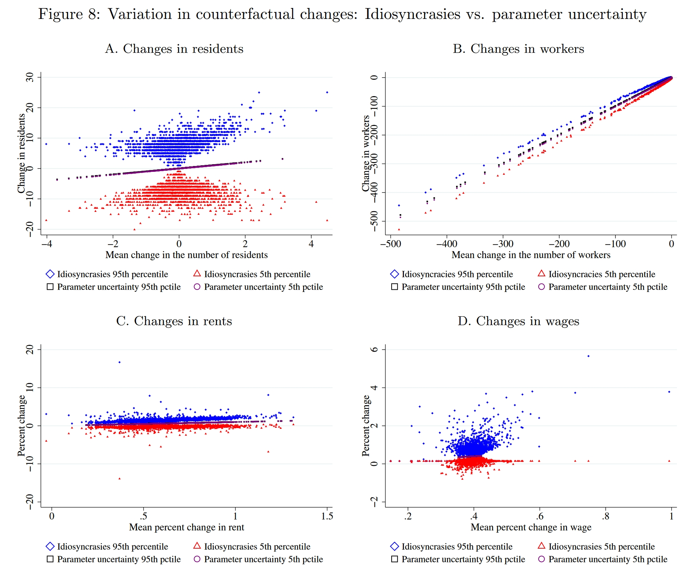
作者尝试改变了一些模型的设定，比如改变商品替代弹性$\sigma$、改变消费函数的形式等等，个体异质性带来的不确定性依然会很大。如果我们将地理尺度稍微扩大一点(比如将区块加总为20个区域单位)，那么反事实预测的不确定性会有所减小，但作者发现，即使是加总到20个区域单位，在预测居民分布的时候，大部分区域单位的变化依然无异于0，预测价格和工人分布的时候，就会变得比较准确了。
总结一下，上面的分析结果表明，如果我们关心的是加总程度更高的变量(比如各地的价格、总体福利之类的)，那么个体异质性带来的不确定性会相对小一点。但如果我们关心一些具体到“地区对”层面的变量(比如各地居民，前面分析中讲的是“处理组区块”工作的居民分布，因此是“区块对”层面的)，那么不确定性就会非常大了。原则上讲，作者建议量化空间均衡的研究者使用经典方法完成反事实估计后，借助有限个体模型，通过多次模拟估计反事实变化的分布，尝试证明反事实变量可以在统计上与0不同。如果无法拒绝无异于0的原假设，则应当在文中汇报这一不确定性。
6. 总结
- 精细的空间数据拓展了可研究的领域，但如果直接使用传统的连续模型，可能会有一些问题。
- 蒙特卡洛模拟的结果表明，在颗粒状设定下，“协变量方法”的预测效果往往更好一些，常用的“精确帽代数”往往是有偏的。
- 我们可以对经典模型做出一些调整，构建一个有限个体的空间模型，在这个模型中，个体的异质性没有被足够多的样本消去，使得变量的反事实变化并非一个确定的数，而是一个随机变量。
- 在估计时，我们可以人为构建出与现实类似的有限样本情形，借助这一构建的样本来计算变量的反事实变化；重复这一过程，可以估计出变量反事实变化的分布，这就为统计推断提供了可能。
- 在亚马逊HQ2的例子中，我们看到了经典连续模型估计出的不为0的反事实变化，在考虑个体异质性带来的不确定性时，很可能在统计意义上其实是无异于0的。我们需要重新审视一些以往的研究了。